📊 指标均值 · 清晰呈现本类素材基准指标，帮你快速定位差距，校准优化方向
消耗(均值)
—增长量(均值)
—CTR (均值)
3.28%CVR (均值)
9.72%3s完播 (均值)
65.6%播放时长(均值)
22.1s📚 方法论沉淀 · 拆解开篇类型核心打法，吃透爆款底层逻辑，轻松拿捏创作节奏
🎬开篇方式细分· 还原头部素材的爆款开篇套路，直接参考高起量创作范式（推荐指数=消耗量级）
明星背书类⭐⭐⭐⭐⭐
邀请于震、刘晓庆、王琳、赵雅芝等知名明星以推荐官身份出镜，用『这辈子没给任何产品站过台唯独这次破例』『以个人信誉担保』等话术建立信任，配合明星冻龄状态展示增强说服力，消耗量级最高
痛点开篇类⭐⭐⭐⭐⭐
开篇直接展示眼袋、法令纹、斑点等衰老痛点特写，或用剪开面罩/口罩露出问题皮肤的戏剧化手法制造视觉冲击，配合『显老10岁』『被嫌弃』等焦虑话术快速建立共鸣
营销福利⭐⭐⭐⭐
开篇直接抛出『全场一折』『拍一发九』『49块9三盒』等超低价钩子，配合倒计时、限量、即将涨价等紧迫感话术，用价格冲击力快速抓住用户注意力
达人种草类⭐⭐⭐⭐
达人以vlog形式自然引入产品，如出差途中、居家护肤等场景，用『近一年最伟大的发明』『差评理由哭笑不得』等悬念话术吸引停留，真实人设增强可信度
剧情演绎类⭐⭐⭐
通过母女对话、夫妻矛盾、街头偶遇等生活化剧情切入，用『眼袋大嫌丢人』『多少钱？』等台词制造情感冲突或惊喜反转，增强代入感和停留时长
产品展示类⭐⭐
以产品在自然场景中的质感特写开篇，配合植萃原料、品牌备案号等信任元素，适合调性较高的品牌，但整体消耗量级偏低
📋脚本框架· 标准化脚本流程拆解，素材组合直接照着用，降低创作试错成本（6 段）
A
【悬念/痛点开篇】
⏱ 0-5s
3秒内抓住注意力，制造停留钩子
📌 猎奇画面+年龄反差/痛点特写+悬念文案，如『40多岁冻龄闺蜜』『剪开口罩露出满脸斑点』『买亏了』
B
【用户痛点放大】
⏱ 5-15s
引发共鸣，建立需求认知
📌 针对眼袋、法令纹、暗黄等痛点逐一点名，用『显老10岁』『被嫌弃』等话术制造焦虑
C
【明星/达人背书+产品亮相】
⏱ 15-45s
建立信任，完成产品植入
📌 明星以推荐官身份出镜，强调『唯一破例站台』『90岁以下有效』，演示产品使用方法
D
【产品成分卖点+功效成分背书】
⏱ 45-80s
强化产品价值感与专业度
📌 展示50年老国货、植萃成分、工厂生产线、功效检测报告等背书元素，穿插素人街采证言
E
【效果对比展示】
⏱ 80-100s
直观呈现产品功效
📌 使用前后半脸对比、涂抹即平特效、多位用户改善反馈等视觉化效果展示
F
【价格福利+引导下单】
⏱ 100-120s
制造紧迫感，完成转化闭环
📌 全场一折、拍一发二/三/九、买正装送正装、限时两小时、工厂直发等促销话术，引导进直播间
☁️核心词云· 提炼高频重点标签，靠前标签即高机会，快速抓准流量密码（卖点 / 用户痛点）
✨ 卖点 · 20 词
50年老国货明星同款全场一折拍一发二工厂直发植萃精华成分抗皱紧致淡化眼袋360°滚珠设计买一送一睡前贴敷即可草本配方周年庆福利正装免费体验微晶透皮技术双胶原成分国妆特字认证使用便捷省时50年国货老品牌明星同款推荐
😣 用户痛点 · 20 词
眼袋大法令纹川字纹泪沟显老皱纹多暗黄没气色上眼皮松弛鱼尾纹抬头纹眼周暗沉长斑被嫌弃熬夜肌老太太纹黑眼圈妊娠纹脚后跟干裂眼袋显老木偶纹
🪞模特 / 对比 / 场景 三段画像
👤 模特画像
以40-60岁中老年女性为主，呈现真实衰老痛点（眼袋下垂、法令纹深）；辅以明星冻龄状态（55岁王琳、72岁赵雅芝、75岁刘晓庆）形成效果对照，气质亲和接地气。
🔁 效果对比方式
采用左右半脸对比、涂抹前后即时对比、撕膜前后强反差对比等方式，重点聚焦眼袋消失、纹路变浅、肤色提亮等视觉变化点。
🎬 场景搭建
以居家护肤（卧室、化妆台、厨房）、街头采访、直播间、工厂生产线为主场景，辅以日本街头、机舱、公园等差异化场景增强真实感。
💬常见爆款话术· 整理高转化爆款话术，直接复用提升素材起量率与吸引力（≥2 条素材出现，产品名已隐藏）
🚀跑量关键点· 跑量必备要素清单，逐项 check，确保创作不踩坑
- **痛点视觉冲击**：眼袋特写、皱纹对比等视觉奇观，3秒直击衰老焦虑制造强停留钩子
- **明星+素人双背书**：明星人格担保建立信任，素人证言增强真实感，形成双重说服
- **限时促销逼单**：一折、拍一发多等福利组合拳，配合限时话术推动即刻转化
📈高光时序数据· 近 7 天日均真实播放进度数据
75/114 条素材有高光时序（覆盖率 65.8%）；关键转化点主要集中在 15-30s。点击/点赞/转发/流失关键点分别为 192/60/50/101 个。
内容策略与转化表现
内容承接
正向 122 · 流失 48 · 平均 17.8s
点击 68 / 点赞 39 / 转发 15 / 流失 48
点击 68 / 点赞 39 / 转发 15 / 流失 48
“旁白：『这是我的日本闺蜜，不可理喻的是她已经40多岁了』（日本街头，短发女性挥手走来）”
信任背书
正向 46 · 流失 12 · 平均 50.3s
点击 33 / 点赞 3 / 转发 10 / 流失 12
点击 33 / 点赞 3 / 转发 10 / 流失 12
“(对比实验) 将护肤油滴在海绵上涂抹，展示吸收较慢”
实测演示
正向 42 · 流失 18 · 平均 39.2s
点击 31 / 点赞 2 / 转发 9 / 流失 18
点击 31 / 点赞 2 / 转发 9 / 流失 18
“(对比实验) 将护肤油滴在海绵上涂抹，展示吸收较慢”
行动催单
正向 39 · 流失 12 · 平均 24.9s
点击 30 / 点赞 4 / 转发 5 / 流失 12
点击 30 / 点赞 4 / 转发 5 / 流失 12
“旁白：『赶紧点进来，刚好我今天在开播，给你们安排一下』（点击头像动画引导）”
价格促销
正向 32 · 流失 3 · 平均 40.7s
点击 24 / 点赞 3 / 转发 5 / 流失 3
点击 24 / 点赞 3 / 转发 5 / 流失 3
“于震：『如果纹纹路路，那就找白云山。如果眼袋像鸡蛋黄，那还找白云山』街采路人：『好用』『非常好用』『又便宜又好用』”
口碑证明
正向 30 · 流失 7 · 平均 30.2s
点击 23 / 点赞 2 / 转发 5 / 流失 7
点击 23 / 点赞 2 / 转发 5 / 流失 7
“达人：『用它涂抹完之后呢，无论我用手啊怎么去揉去擦，都是不掉色的，而且姐妹用它遮盖完之后啊，用梳子平常像梳头一样就这么去梳它呢』”
- 内容可解释率 96.3%：388/403 个关键点匹配到对应脚本或结构文案。
- 正向转化最强的是「内容承接」：出现 122 个点击/点赞/转发关键点，平均发生在 17.8s；典型内容“旁白：『这是我的日本闺蜜，不可理喻的是她已经40多岁了』（日本街头，短发女性挥手走来）”。
- 主要流失风险来自「内容承接」：对应 48 个流失关键点，平均发生在 20.0s；需优先压缩或改写“旁白：『而且你会发现，做完水光的脸，跟你用什么面膜啊、爽肤水、精华出来的完全不一样』（出现面膜、水瓶、精华图标）”。
关键点内容证据
2a7ef53c · 15.0s · 流失最大流失点（142.7）用户在此大量划走
9f971b79 · 48.0s · 流失最大流失点（142.7）用户在此大量划走
7cb564b5 · 72.0s · 流失最大流失点（142.7）用户在此大量划走
8515f2fc · 157.0s · 流失最大流失点（142.7）用户在此大量划走
087f4827 · 40.0s · 流失最大流失点（142.6）用户在此大量划走
25fea3c0 · 32.0s · 流失最大流失点（142.4）用户在此大量划走
664fe48b · 35.0s · 流失最大流失点（142.4）用户在此大量划走
8c95bf44 · 2.0s · 流失最大流失点（141.7）用户在此大量划走
🏆 代表素材关键帧拆解 · 品牌 / 非品牌各 Top5（按消耗降序）
🏪 品牌素材 Top5（按消耗降序）

#1
消耗 — · 增长量 — · CTR 2.56% · CVR 3.46% · 3s完播 57.1% · 播放时长 10.5s
🎂 转化人群年龄分布 主力 40-50
40- 21.9%40-50 49.7%50+ 28.4%
0-13 0.3%19-24 0.4%25-29 1.0%30-34 4.8%35-39 15.4%40-44 24.9%45-49 24.7%50-54 15.8%55-59 8.1%60-64 3.2%65+ 1.4%
开篇类型属于颜值美女+异国vlog信任背书型。开篇以日本街头实拍引入，展示40多岁却状态极佳的日本闺蜜，用『不可理喻』的年龄反差制造悬念钩子。接着通过闺蜜推荐引出水光仪产品，展示倒精华、喷雾上脸的使用过程。重点阐述水光仪的核心原理——『有力度把精华打到皮肤深层』，对比普通护肤品只能表面吸收的痛点。最后用『美容院四位数vs居家不到一块钱』的价格锚点制造超高性价比认知，引导用户点击头像进入直播间下单。

开篇悬念
0-6s

产品亮相
7-12s

痛点引入
13-18s

卖点轰炸
19-32s

效果对比
33-46s
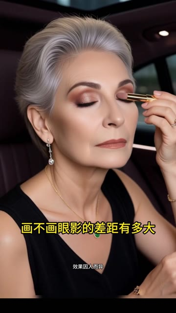
#2
消耗 — · 增长量 — · CTR 2.70% · CVR 11.38% · 3s完播 50.6% · 播放时长 14.7s
🎂 转化人群年龄分布 主力 50+
40- 7.2%40-50 25.3%50+ 67.5%
0-13 0.1%19-24 0.2%25-29 0.4%30-34 1.4%35-39 5.0%40-44 10.4%45-49 14.9%50-54 20.5%55-59 19.7%60-64 15.8%65+ 11.5%
痛点悬念开场
产品亮相
卖点轰炸
多场景演示
用户证言

#3
消耗 — · 增长量 — · CTR 4.33% · CVR 12.92% · 3s完播 55.8% · 播放时长 13.7s
🎂 转化人群年龄分布 主力 40-
40- 53.1%40-50 39.6%50+ 7.3%
19-24 1.2%25-29 4.7%30-34 15.2%35-39 31.9%40-44 25.0%45-49 14.6%50-54 5.5%55-59 1.4%60-64 0.3%65+ 0.2%
开篇类型属于明星夫妻vlog+产品植入型。开篇明星陈紫函与丈夫戴向宇在床上互动，提议约会制造生活化氛围。接着陈紫函提到要见婆婆但不想化妆，自然引出某品牌冰川净颜泥膜，强调清洁同时养肤。重点展示多位达人演示泥转泡技术，突出『油脸天菜』『一周两次』『贵妇护理』等卖点，用『脏东西被吸出来』『毛孔自由呼吸』等体感文案增强说服力。穿插周年庆促销信息，送旅行装和泥膜刷。结尾回归约会主线，夫妻商场挑衣、换装展示、与婆婆聚餐，完成vlog闭环。

开篇悬念
0-10s

痛点引入
10-13s

产品亮相
14-26s

卖点轰炸
27-47s

效果演示
48-76s
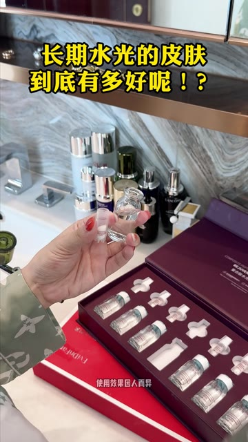
#4
消耗 — · 增长量 — · CTR 1.49% · CVR 5.42% · 3s完播 46.7% · 播放时长 7.9s
🎂 转化人群年龄分布 主力 40-50
40- 37.3%40-50 51.4%50+ 11.3%
19-24 0.7%25-29 2.3%30-34 8.5%35-39 25.8%40-44 29.6%45-49 21.8%50-54 7.7%55-59 2.5%60-64 0.8%65+ 0.4%
开篇类型属于产品展示+悬念文案型。开篇以『长期水光的皮肤到底有多好』悬念标题配合产品开箱动作吸引停留，展示原液倒入喷雾仪的操作流程。接着通过海绵吸水实验直观演示产品渗透力，海绵挤出大量水分形成视觉冲击。重点由16年美容院从业者口播分享，对比美容院单次几百上万的价格，强调居家使用每天不到1块钱的超高性价比。博主展示自己快40岁的良好皮肤状态作为效果背书。结尾引导进入直播间，以『院线仪器免费试用』促成转化。
产品亮相
0-11s
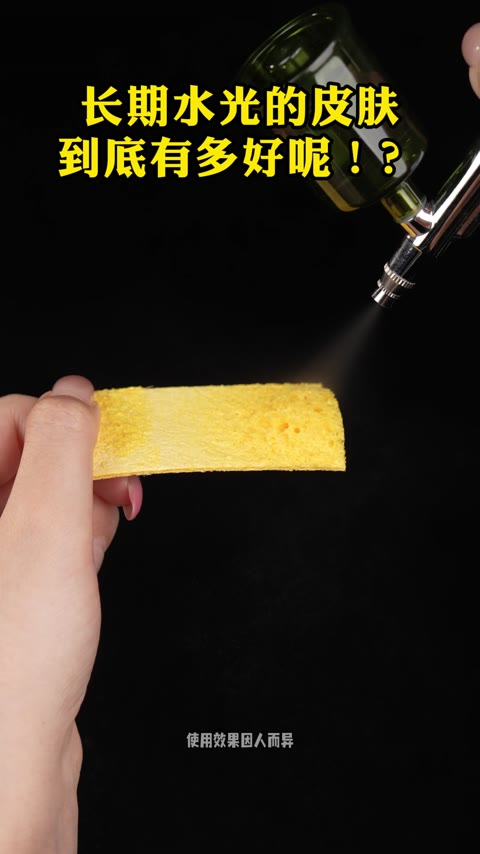
效果对比
11-27s
痛点引入
27-43s
卖点轰炸
43-56s
产品演示
56-72s
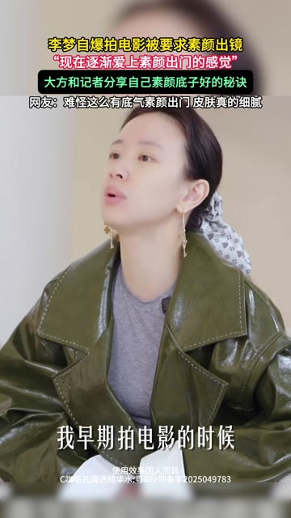
#5
消耗 — · 增长量 — · CTR 1.82% · CVR 9.74% · 3s完播 69.1% · 播放时长 11.5s
🎂 转化人群年龄分布 主力 40-50
40- 49.4%40-50 50.2%50+ 0.4%
30-34 13.2%35-39 36.2%40-44 31.0%45-49 19.1%50-54 0.4%
开篇类型属于明星采访+多明星背书型。开篇以李梦接受采访自爆拍电影被要求素颜为钩子，展示其细腻皮肤底子并引出产品。接着切入徐璐直播推荐片段，强调『不是智商税』的真实体验，并用四宫格展示陈妍希、沈梦辰等多位明星同款。中段由美妆博主讲解毛孔问题成因，配合3D动画演示酸酶疏通原理，增强科学说服力。重点展示赵樱子直播分享被男演员夸『一个毛孔都没有』的故事，手把手教护肤。结尾罗列适用人群并强调『便宜国货』『现在不贵了』的性价比优势引导转化。
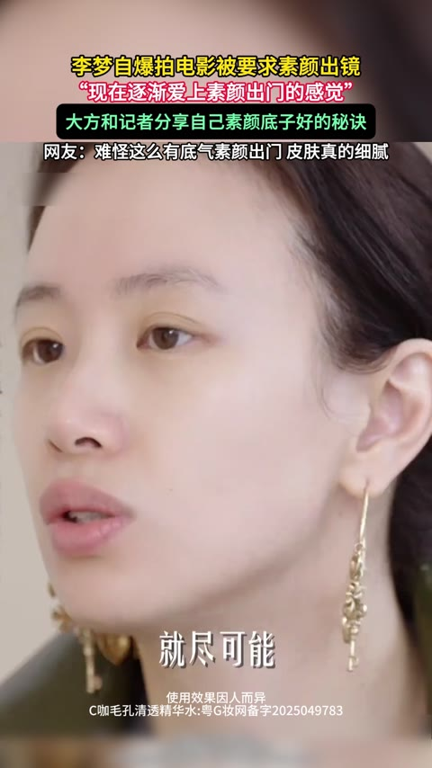
明星话题开篇
0-7s
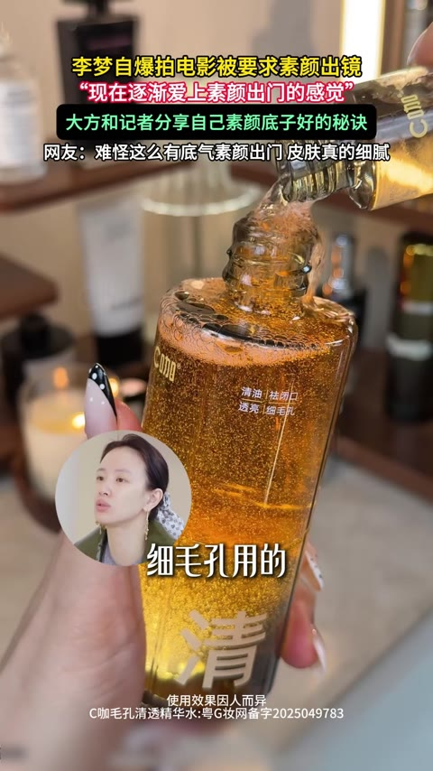
产品引出
8-16s
多明星背书
17-25s
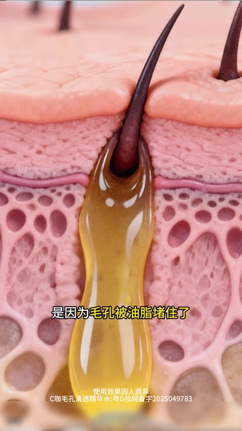
痛点+原理讲解
26-43s
效果证言
44-55s
🏬 非品牌素材 Top5（按消耗降序）
无封面
#1
消耗 — · 增长量 — · CTR 0.23% · CVR — · 3s完播 — · 播放时长 —
—
—
—
—
—
#2
消耗 — · 增长量 — · CTR 3.61% · CVR 5.93% · 3s完播 79.0% · 播放时长 33.6s
🎂 转化人群年龄分布 主力 50+
40- 2.5%40-50 5.4%50+ 92.1%
0-13 0.5%19-24 0.3%25-29 0.3%30-34 0.5%35-39 0.8%40-44 1.6%45-49 3.8%50-54 8.5%55-59 13.8%60-64 19.4%65+ 50.5%
开篇类型属于情感冲突剧情+明星背书型。开篇通过公园老夫妻矛盾剧情，用『眼袋大嫌丢人』的台词直击中老年女性被嫌弃的情感痛点。接着医生角色出场为老奶奶涂抹眼油，完成产品植入。重点展示于震、王琳两位明星的推荐背书，于震强调『这辈子没给任何产品站过台唯独这次破例』增强信任。穿插街头采访素人好评和使用前后对比效果，配合灵芝人参等成分展示与50年国货品牌背书。结尾以『拍一发二』『买正装送正装』的促销信息收尾，引导进入直播间下单。
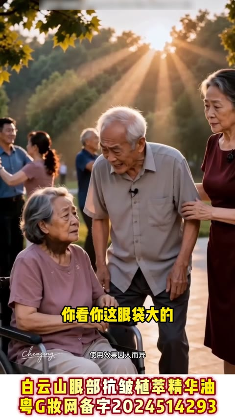
剧情痛点开篇
0-7s
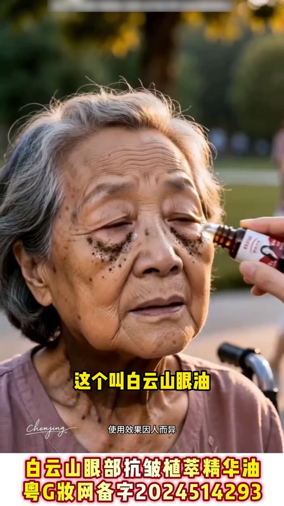
产品植入
7-13s
明星背书
13-32s
用户证言
25-32s
卖点轰炸
32-47s
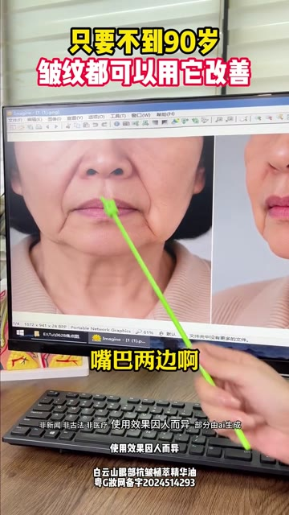
#3
消耗 — · 增长量 — · CTR 2.24% · CVR 7.37% · 3s完播 50.7% · 播放时长 13.9s
🎂 转化人群年龄分布 主力 50+
40- 2.9%40-50 4.2%50+ 92.9%
0-13 0.7%19-24 0.4%25-29 0.4%30-34 0.5%35-39 0.9%40-44 1.4%45-49 2.8%50-54 10.1%55-59 16.0%60-64 21.1%65+ 45.6%
开篇类型属于痛点对比+男性权威口播型。开篇用电脑屏幕展示老年女性嘴角皱纹特写，配合指示棒精准点出『老太太纹』『口角囊袋下垂』等痛点，制造焦虑共鸣。接着演员于震出镜，以权威口吻介绍白云山抗皱眼油，用『90岁以下都能改善』的夸张话术建立产品信心。重点展示王琳、李若彤等明星冻龄案例，暗示产品功效。穿插街头采访和用户证言，强化真实口碑。详细讲解产品成分（10种草本萃取）和使用方法（晚上涂抹）。结尾强调『拍一发二』的促销福利，以『买正装送正装』引导下单转化。
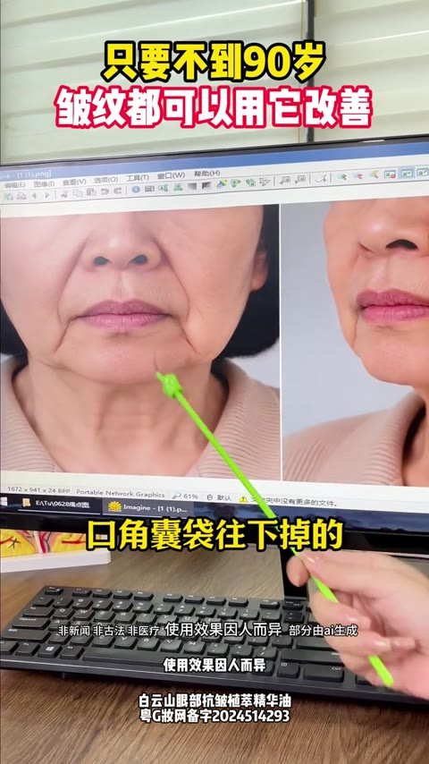
痛点引入
0-5s
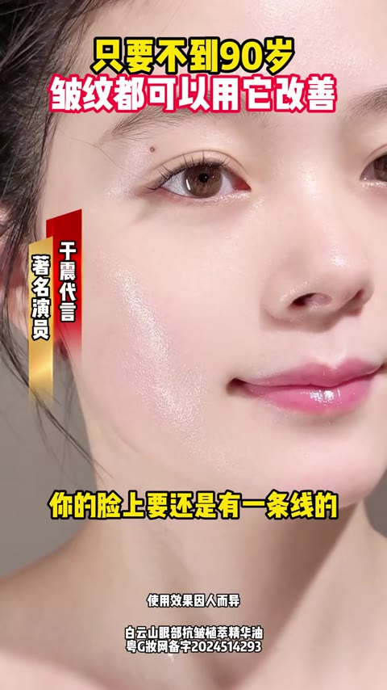
产品亮相
6-14s
明星背书
15-21s
卖点轰炸
22-43s
用户证言
44-56s
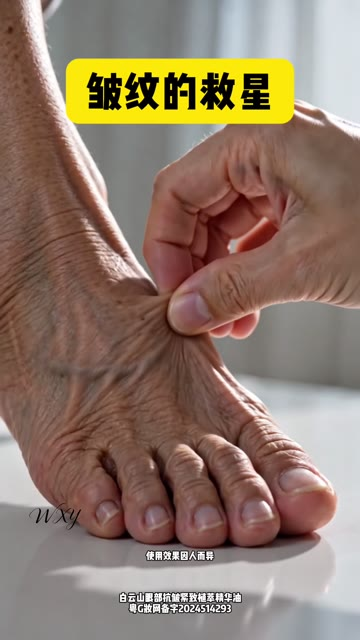
#4
消耗 — · 增长量 — · CTR 3.72% · CVR 1.67% · 3s完播 68.3% · 播放时长 16.6s
🎂 转化人群年龄分布 主力 50+
40- 2.5%40-50 8.9%50+ 88.6%
19-24 0.4%25-29 0.4%30-34 0.6%35-39 1.1%40-44 2.5%45-49 6.4%50-54 10.4%55-59 16.8%60-64 20.4%65+ 41.0%
开篇类型属于痛点对比+明星背书型。开篇用老年人脚部皱纹特写配合产品涂抹后『瞬间平滑』的夸张效果制造视觉冲击。接着于震以『知名演员』身份出镜，逐一点出额头纹、法令纹、川字纹等痛点，推荐白云山抗皱眼油。随后模特演示产品在抬头纹、法令纹、泪沟眼袋处的使用方法，强调『只能晚上用，太猛了』。中段穿插街头采访和用户证言，加入明星王琳、李颖背书强化信任。重点展示50年老品牌、人参灵芝等成分卖点。结尾于震直播间砍价从199降到99，配合『拍一发二』促销引导下单。
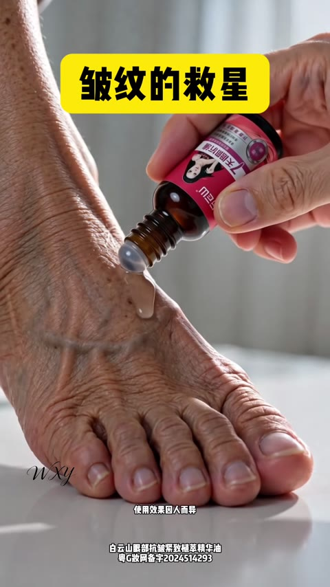
痛点+悬念开场
0-5s
明星背书
5-15s
产品演示
15-26s
用户证言
26-42s
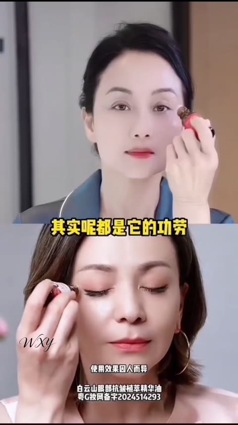
明星背书加码
42-55s
#5
消耗 — · 增长量 — · CTR 2.14% · CVR 15.86% · 3s完播 44.4% · 播放时长 10.4s
🎂 转化人群年龄分布 主力 50+
40- 1.6%40-50 22.0%50+ 76.4%
30-34 0.3%35-39 1.3%40-44 6.0%45-49 16.0%50-54 24.8%55-59 22.0%60-64 16.5%65+ 13.1%
开篇类型属于痛点对比+多达人实测型。开篇以街头女性行走配合『女人有白头发是很显老的』痛点文案直击用户焦虑，随即展示产品并引出解决方案。接着多位达人轮番出镜，分享自己使用前频繁染发的困扰和使用后的便捷体验，用真实白发展示产品遮盖效果。重点展示产品三合一功能（遮白发+发际线粉+蓬松粉），并通过防水防掉色测试、梳子梳理不沾染等实验增强信任。最后与膏状、水状竞品对比，突出粉饼状产品自然蓬松不油腻的优势，强调耐用性和植物成分安心感。
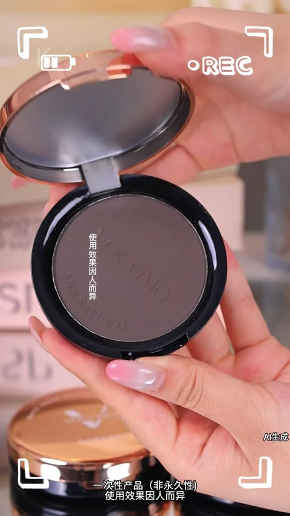
痛点引入
0-8s
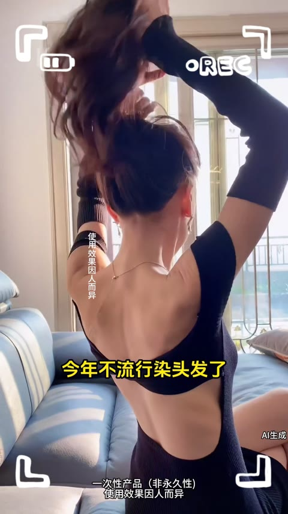
产品亮相
8-12s
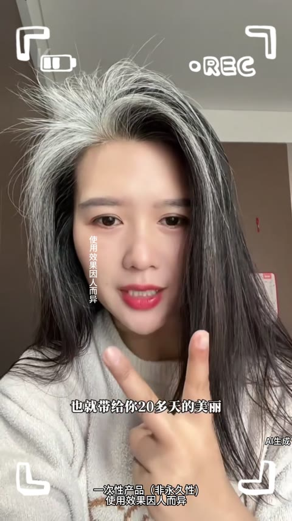
多达人实测
12-34s
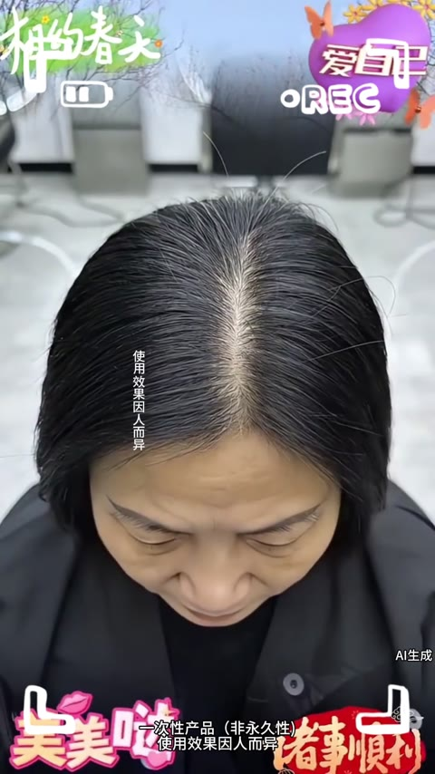
卖点轰炸
34-50s
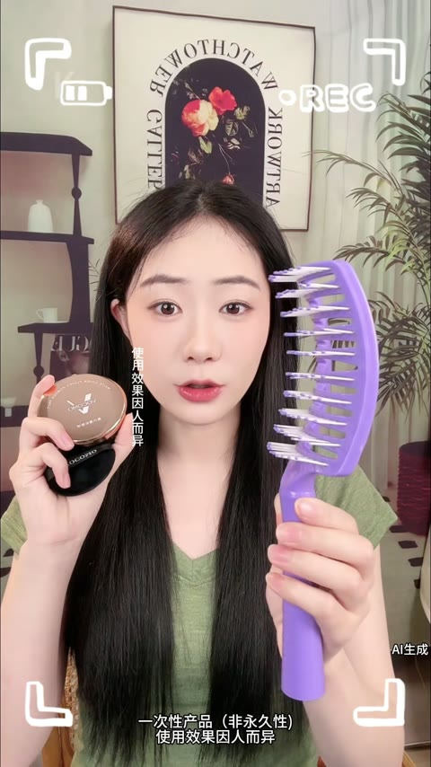
效果验证
50-74s